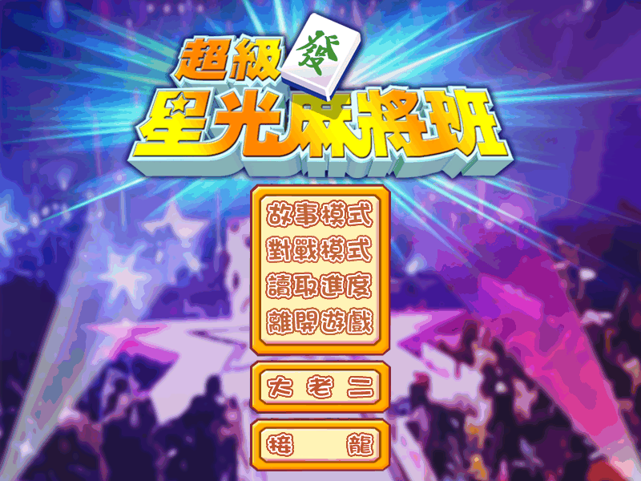
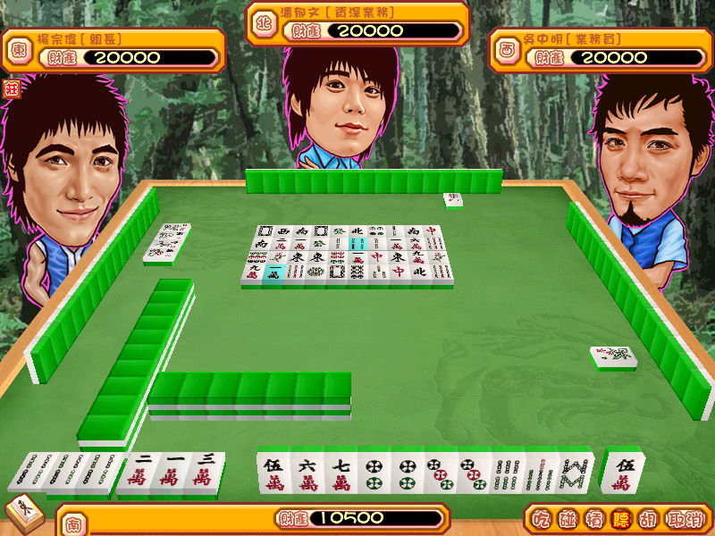

名稱：超級星光麻將館 (Super Star MahJong，中文版)
簡介：奇特科技2008年出品的四人16張麻將遊戲，由新世代代理發行，以星光幫成員為角色，
提供了對戰模式與劇情模式等兩種玩法，另外也提供了大老二、接龍等撲克牌遊戲。
劇情模式玩法和和「向左碰向右糊」幾乎一模一樣，採用類似模擬養成的玩法，玩家
必須決定每日上班與下班時間要做的事情，以觸發劇情，逐步升遷職位 [待補]。


保護：光碟（採用多Session保護），破解碼：
game.exe
75 2D 8B 7C 24 18
EB -- -- -- -- --
備註：VirtualBox須搭配WineD3D，否則會無法顯示對話內容。